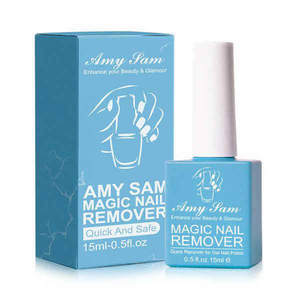

Trade Mark Journal No.2025/016 18 April 2025
UK00004180289 27 March 2025 (3)

- Class 3
- Beauty serums; Beauty lotions; Beauty creams; Beauty care cosmetics; Beauty masks; Masks (Beauty -); Beauty soap; Beauty milk; Beauty gels; Beauty milks; Beauty balm creams; Beauty creams for body care; Facial beauty masks; Beauty preparations for the hair; Beauty care preparations; Distilled oils for beauty care; Beauty tonics for application to the face; Beauty masks for hands; Beauty serums with anti-ageing properties; Beauty tonics for application to the body; Natural cosmetics; Body cleaning and beauty care preparations; Non-medicated beauty preparations; Natural makeup; Skincare cosmetics; Body care cosmetics; Natural perfumery; Body and facial creams [cosmetics]; Hair cosmetics; Cosmetics; Skin care cosmetics; Colour cosmetics; Facial creams [cosmetics]; Colour cosmetics for the skin; Hair care creams [for cosmetic use]; Anti-aging moisturizers used as cosmetics; Colour cosmetics for the eyes; Cosmetic products in the form of aerosols for skincare; Body creams [cosmetics]; Cosmetics for eye-lashes; Hair care lotions [for cosmetic use]; Natural oils for cosmetic purposes; Organic cosmetics; Cosmetic products in the form of aerosols for skin care; Cosmetics for suntanning; Facial makeup; Decorative cosmetics; Sun care lotions [for cosmetic use]; Nail gel; Gel nail removers; Tooth gel; Nail glitter; Nail polish; Nail varnish; Varnish (Nail -); Nail cream; Nail polish pens; Hair gel; Nail polish remover pens; Nail polish remover; Nail makeup; Nail enamel remover; Nail polish removers; Nail enamel; Nail hardeners; Nail varnishes; Nail cosmetics; Nail strengtheners; Nail primer [cosmetics]; Nail varnish remover [cosmetics]; Nail whiteners; Nail varnish removers; Eyebrow gel; Shaving gel; Nail enamel removers; Nail hardeners [cosmetics]; Nail polish removers [cosmetics]; Preparations for removing gel nails; Shave gel; Nail polishing powder; Nail paint [cosmetics]; Gel scrub; Nail enamels; Nail polish base coat; Eye gel; Nail conditioners; Shower gel; Nail polish top coat; Nail base coat [cosmetics]; Mattifying gel cream; Lavender gel; Nail tips [cosmetics]; Nail tips; Hair styling gel; Nail buffing preparations; Nail varnish removing preparations; Gel eye masks; Dental bleaching gel; Powder for forming sculpted finger nail tips; Cosmetic preparations for nail drying; Nail decolorants; Nail varnish for cosmetic purposes; Cosmetic nail preparations; Gel sprays being styling aids; Nail art stickers; Hair gels; Shoe polish and creams; Tooth polish; Shower and bath gel; Bath and shower gel; Nail care preparations; Soaps in gel form; Spray polish; Skin, eye and nail care preparations; Glue for strengthening nails; Shaving gels; Shoe polish applicators containing shoe polish; Gels for use on the hair; Sun tan gel; Nail repair preparations; Cosmetic nail care preparations; Lotions for strengthening the nails; Tooth polishes; Gels for fixing hair; Moisturising gels [cosmetic]; Dressings for nail reconstruction; Hair styling gels; Glitter in spray form for use as a cosmetics; Cuticle cream; Tanning gels [cosmetics]; Shoe polish; Gel eye patches for cosmetic purposes; Adhesives for false eyelashes, hair and nails; Pre-shave gels.
Amy Sam limited